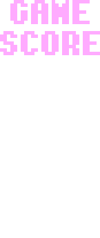
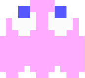
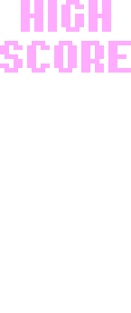

СДВГ
Розовый призрак, которого зовут Спиди по прозвищу Пинки.
Оригинальным японским именем является Матибусэ, что означает сидящий в засаде, по прозвищу Пинки.
Спиди - алицетворяет нарушением развития, проявляющееся трудностями концентрации и поддерживания внимания,
чрезмерной двигательной активностью (гиперактивностью) и несдержанностью (импульсивностью).
Призрак постоянно в движении и не может сидеть на месте. Он является самым быстрым призраком, который постоянно летает через стены.
Он беспокойный, сложный, но все это обуславливается одним - низкая самооценка. Розовый призрак страдает от депрессии и хронической скуки.
Уделите больше внимания для Спиди, пожалуйста, этому сладкому пирожочку правда тяжело.
